A prompt asks for a rock climbing YouTube channel; the agent builds the channel, generates and uploads 21 videos; a swipe shows views climbing to 48,000 with 12,400 subscribers and 3,900 comments; the DAWN sign-off.
Make me a rock climbing youtube channel
On it.
21 videos uploaded this week
Latest comments
